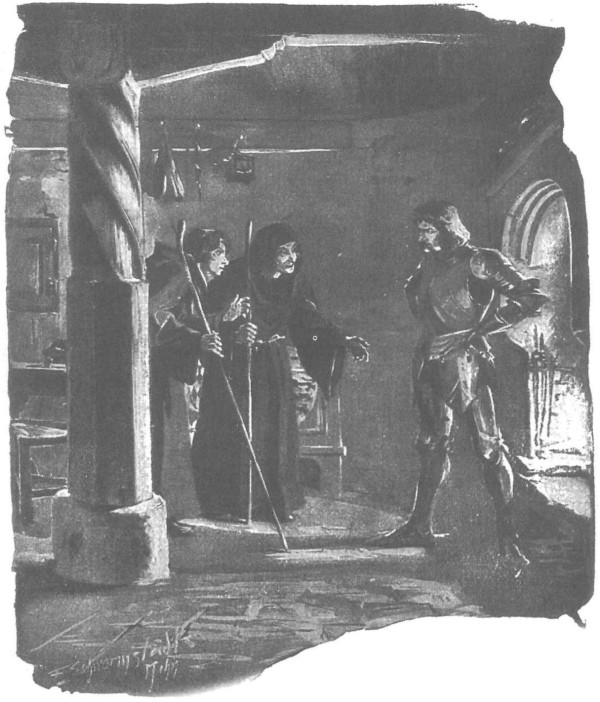

Đi sau lưng ông, Zbyszko không thể chịu đựng nổi, tự nhủ thầm trong dạ: “Thà ông ấy nổ bùng cơn giận còn hơn cứ găm mãi trong lòng!” Chàng bèn thúc ngựa lên đi cạnh ông, chạm bàn đạp vào bàn đạp của ông, lên tiếng:
- Xin ngài hãy nghe cháu kể chuyện đã xảy ra thế nào. Điều mà Danusia đã làm vì cháu hồi ở Kraków thì ngài biết rồi, nhưng ngài không biết rằng khi quay về trang Bogdaniec, người ta định gả cô Jagienka, con gái trang chủ Zych trang Zgorzelice cho cháu. Thúc phụ cháu, hiệp sĩ Maćko, muốn thế. Thân phụ nàng, hiệp sĩ Zych, cũng muốn thế. Và cả cha tu viện trưởng có họ với cháu, một phú hộ, cũng muốn vậy… Nhưng kể dài dòng mà làm gì? Cô ấy tốt bụng và chân thực, của hồi môn cũng xứng đáng. Nhưng không thể như thế được! Cháu thương Jagienka, nhưng còn thương Danusia hơn nhiều. Thế là cháu bèn lên đường tìm đến Mazowsze với nàng, bởi xin thú thực cùng ngài - cháu không thể sống thiếu nàng lâu hơn nữa. Xin ngài hãy nhớ lại xem chính ngài cũng đã từng yêu thương vợ mình đến chừng nào! Ngài hãy nhớ lại xem! Và chắc là ngài sẽ không lấy làm lạ!
Đến đây, Zbyszko dừng lại chờ ông Jurand thốt ra dù chỉ một lời, nhưng ông vẫn im lặng, chàng bèn nói tiếp:
- Hồi ở lâm cung, Chúa đã ban cho cháu diễm phúc được cứu sống cả quận chúa lẫn Danusia khỏi bị bò rừng húc trong hội săn. Quận chúa bèn bảo ngay: “Giờ thì hẳn ông Jurand không phản đối nữa, bởi vì còn cách nào khác trả nghĩa một hành động như thế này chăng?” Nhưng lúc ấy, chưa được sự cho phép của thân phụ nàng là ngài, cháu vẫn chưa thể dám mạo muội xin cưới. Mà thực ra cũng không thể cưới được, bởi vì con vật hung tợn ấy đã húc cháu đến suýt mất mạng. Rồi sau đó, ngài biết đấy, những người kia tới đón Danusia, để đưa nàng về Spychow, trong khi cháu vẫn đang nằm liệt giường, cháu nghĩ rằng thế là sẽ không bao giờ được gặp lại nàng nữa. Cháu cứ tưởng ngài đón nàng về Spychow để gả cho một người nào khác. Hồi ở Kraków, ngài đã không chấp nhận cháu kia mà… Cháu cứ nghĩ là mình sẽ chết Hey! Lạy Chúa hùng mạnh, cái đêm hôm ấy mới ghê gớm làm sao! Không có gì khác ngoài buồn lo, không có gì hết ngoài nuối tiếc. Cháu nghĩ là nếu nàng ra đi, mặt trời sẽ không mọc nữa. Xin ngài hãy hiểu cho tình yêu của con người, nỗi đau của con người…
Rung lên một thoáng trong giọng nói nức nở của Zbyszko, nhưng vốn có một trái tim can trường, chàng nén lòng nói tiếp:
- Bọn người kia đến đón nàng vào buổi chiều tối, định đem nàng đi ngay nhưng quận chúa bắt chúng phải chờ đến sáng. Và khi ấy, Đức Chúa Giêsu ban cho cháu ý nghĩ cầu xin quận chúa ban Danusia cho. Cháu nghĩ rằng nếu phải chết thì dẫu sao vẫn có được một niềm an ủi. Ngài hãy nghĩ thử xem, nàng sắp phải ra đi, cháu nằm lại cận kề cái chết Không còn thời gian để cầu xin ngài cho phép nữa. Quận công cũng không có mặt ở lâm cung, quận chúa đâm phân vân, nghiêng ngả giữa hai bên, bởi bà không biết hỏi ý kiến ai. Nhưng rồi cuối cùng, cùng với linh mục Wyszoniek, bà thương tình đồng ý cho linh mục làm phép cưới cho cháu… Sức mạnh của Chúa, quyền lực của Chúa…
Ông Jurand khô khốc ngắt lời chàng:
- Và sự trừng phạt của Chúa.
- Nhưng trừng phạt về chuyện gì chứ ạ? - Zbyszko hỏi. - Ngài cứ thử nghĩ mà xem, bọn chúng đến đón nàng đi trước khi làm phép cưới, dù có cưới hay không thì chúng cũng đem nàng đi mất kia mà.
Nhưng ông Jurand lại lặng câm chẳng nói gì nữa, cứ thúc ngựa đi, âm thầm, u ám, mặt như hóa đá, khiến cho Zbyszko vừa cảm thấy lòng nhẹ nhõm khi nói ra điều vẫn phải giữ kín trong lòng, lúc này lại đâm e sợ. Chàng thầm tự nhủ, mỗi lúc một lo ngại hơn, rằng vị hiệp sĩ cao tuổi kia sẽ mãi mãi căm giận chàng và kể từ đây, họ sẽ là hai người xa lạ thù hằn nhau.
Chàng chợt thấy lòng rã rời. Chưa bao giờ, kể từ ngày rời Bogdaniec, chàng thấy khổ đến thế. Lúc này đây, chàng thấy không còn chút hy vọng nào chiếm được lòng ông Jurand nữa, và tệ hại hơn, không còn chút hy vọng gì cứu thoát được Danusia. Mọi sự đều chẳng ích gì, tương lai sẽ chỉ toàn tai ương, bất hạnh càng ngày càng tệ hại giáng xuống đầu chàng mà thôi. Nhưng sự ngã lòng ấy chẳng kéo dài lâu, hay nói đúng hơn, do bản tính của chàng, chẳng mấy chốc nó biến thành cơn giận, ý muốn gây gổ và đánh nhau. “Ông ấy không muốn hòa thuận,” chàng tự nhủ khi nghĩ về ông Jurand, “thì bất hòa cũng được! Ông ấy muốn gì thì nên thế!” Và chàng sẵn sàng đương đầu với chính hiệp sĩ Jurand. Chàng chợt khát khao được đánh nhau ngay lập tức với ai đó, vì bất cứ chuyện gì, làm bất kỳ việc gì giải thoát cho nỗi tiếc hận, cay đắng và căm giận, để tìm được sự khuây khỏa.
Lúc ấy, cả đoàn rẽ vào một tửu điếm ở ngã ba đường được gọi là Swietlik, nơi ông Jurand thường cho người và ngựa dừng chân nghỉ lại những khi từ cung điện quận công trở về Spychow. Lần này, bất giác ông cũng làm như thế. Lát sau, ông và Zbyszko cùng có mặt trong một buồng riêng. Đột nhiên, ông Jurand đứng sững trước mặt hiệp sĩ trẻ, nhìn chằm chặp vào mắt chàng và hỏi:
- Có đúng là vì con ta mà anh lang bạt đến tận đây không?
Chàng trả lời gần như ngang ngạnh:
- Ngài nghĩ là tôi sẽ chối chăng?
Rồi chàng cũng nhìn thẳng vào mắt ông Jurand, sẵn sàng bùng lên một cơn giận chống lại cơn giận của ông. Nhưng trên nét mặt người chiến sĩ cao tuổi ấy không hề có vẻ gì căng thẳng, chỉ biểu lộ nỗi buồn vô hạn độ.
- Và anh đã cứu sống con ta? - Lát sau ông lại hỏi. - Rồi chính anh đã bới tuyết cứu ta?…
Zbyszko nhìn ông kinh ngạc, sợ rằng ông đã quẫn trí, bởi ông Jurand lặp lại nguyên những câu mà ông vừa hỏi chàng lúc nãy.
- Ngài hãy ngồi xuống đây, - chàng thốt lên, - bởi cháu thấy hình như ngài đang mệt.
Nhưng ông Jurand đã đưa hai tay ra đặt lên vai Zbyszko, rồi đột nhiên ông lấy hết sức ghì chàng vào ngực. Thoát khỏi cơn thảng thốt trong một thoáng, chàng cũng ôm ngang người ông, và họ cứ ôm ghì nhau như thế, rất lâu, bởi họ đã được nối kết với nhau bằng một nỗi đau xót chung, một niềm bất hạnh chung.
Khi họ rời nhau ra, Zbyszko quỳ xuống ôm hôn đầu gối của vị hiệp sĩ già, rồi nước mắt chan hòa, tới tấp hôn tay ông.
- Ngài sẽ không phản đối cháu nữa chứ? - Chàng hỏi.
Hiệp sĩ Jurand đáp:
- Ta đã từng phản đối anh, bởi trong linh hồn ta đã dâng hiến con bé cho Đức Chúa.
- Ngài đã hiến dâng nàng cho Chúa, Chúa lại ban cho cháu. Đó là ý muốn của Chúa!
- Ý muốn của Người! - Ông Jurand nói. - Nhưng bây giờ, chúng ta cần cả lòng nhân từ của Người nữa.
- Đức Chúa còn sẽ giúp ai, nếu không giúp một người cha đang đi tìm con, nếu không giúp một người chồng đang đi kiếm vợ? Chúa chẳng bao giờ giúp bọn kẻ cướp đâu.
- Thế mà chúng nó vẫn cướp được con bé. - Ông Jurand nói.
- Vậy ngài hãy trả de Bergow cho chúng.
- Ta sẽ trả hết tất cả những gì chúng muốn.
Ý nghĩ về bọn Thánh chiến lại đánh thức trong ông niềm thù hận cũ, thiêu đốt như ngọn lửa. Lát sau, ông nói thêm qua hàm ràng nghiến chặt:
- Và ta sẽ trả thêm cả những gì chúng không muốn nữa kia!
- Cháu cũng không đội trời chung với chúng! - Zbyszko nói. - Còn bây giờ, ta cần phải về ngay Spychow đã.
Cả hai đốc thúc gia nhân thắng ngựa. Và sau khi ngựa đã được cho ăn ngũ cốc, người đã được sưởi ấm đôi chút trong nhà, họ liền lên đường đi tiếp, dẫu ngoài trời bóng tối đã buông. Vì đường hẵng còn xa, đêm lại rất giá buốt, nên ông Jurand và Zbyszko - những người chưa hoàn toàn lấy lại sức - phải ngồi trên xe trượt. Zbyszko kể cho ông nghe về ông chú chàng là hiệp sĩ Maćko, người mà lòng chàng hằng nhớ, tiếc là chú không có mặt nơi đây, bởi nếu không ông có thể góp cả lòng can trường lẫn sự tinh khôn - điều còn cần hơn cả sự can trường, trong cuộc chiến với những kẻ thù như bọn Thánh chiến. Sau cùng, chàng ngoảnh sang ông Jurand, hỏi:
- Ngài có khôn khéo được không?… Chứ cháu thì không hiểu sao không tài nào khéo được.
- Ta cũng không. - Ông Jurand đáp. - Ta không đánh nhau với chúng bằng mưu mẹo, mà bằng cánh tay này, bằng nổi đau vò xé lòng ta.
- Cháu hiểu rồi. - Chàng hiệp sĩ trẻ nói. - Cháu hiểu được điều đó, vì cháu đã yêu thương Danusia mà nàng lại bị chúng bắt đi. Nếu như, xin Chúa hãy che chở…
Chàng không nói hết câu, vì chỉ chớm nghĩ tới điều đó thôi, chàng đã cảm thấy như trong lồng ngực mình không còn là trái tim người nữa, mà là tim lang sói. Hồi lâu, họ im lặng đi trên con đường trắng xóa rải ánh bạc của vầng trăng, rồi ông Jurand lên tiếng nhu thể đang nói với riêng mình:
- Nếu chúng nó có lý do gì để thù hận ta thì đâu có gì để nói! Nhưng, lạy Chúa lòng lành! Chúng đâu có lý gì… Ta đánh nhau với chúng trên chiến trường, khi ta tham gia đoàn sứ giả của quận công ta đến gặp đại quận công Witold, còn ở đây ta đối xử với chúng như láng giềng kia mà… Bartosz Nałęcz đã từng bắt gọn bốn mươi hiệp sĩ định đi đến với bọn chúng, xích tay chân, giam xuống hầm ngục Kozmina. Bọn Thánh chiến đã phải đổ ra hàng nửa xe tiền để chuộc mạng chúng. Còn ta, khi gặp một hiệp khách người Đức muốn đến với bọn Thánh chiến, vượt bãi lầy đến trang ấp của ta, ta đã tiếp đón ông ta như hiệp sĩ, và đưa đến cho chúng. Bọn Thánh chiến cũng đã nhiều lần vượt qua bãi lầy đến thăm ta. Hồi bấy giờ ta đâu đã nặng tay với chúng, thế mà chúng nỡ đối xử với ta bằng những việc mà ngay cả bây giờ ta cũng không nỡ đối xử với kẻ thù ghê gớm nhất..
Những hồi ức kinh khủng mỗi lúc một khiến ông thêm xúc động, tiếng ông nghẹn ngào hồi lâu trong ngực, rồi ông thốt lên, nghe như xen cả tiếng rên rỉ:
- Ta chỉ có mỗi một con cừu đó thôi, như chỉ có mỗi một trái tim trong ngực, thế mà bọn chúng dám lấy dây thừng trói lại như trói chó, khiến nàng phải chết nghẹt thở trong vòng dây thừng của chúng… Giờ lại đem con gái ta… Ôi! Chúa ơi! Chúa ơi!…
Rồi lại câm lặng. Zbyszko ngước khuôn mặt trai trẻ, thảng thốt ngạc nhiên nhìn vầng trăng, rồi nhìn ông Jurand và hỏi:
- Cha ơi!… Chúng sẽ được lợi lộc bao nhiêu trên tình yêu của con người chứ không phải trên hằn thù kiếm chác. Tại sao chúng lại gây ra bấy nhiêu nỗi thống khổ cho mọi dân tộc, cho mọi con người như thế, thưa cha?
Ông Jurand chỉ xòe hai bàn tay tuyệt vọng, thốt lên những tiếng trầm đục nghẹn ngào:
- Ta không biết…
Zbyszko suy ngẫm hồi lâu về câu hỏi của chính chàng, nhưng lát sau tâm trí chàng quay trở lại với ông Jurand.
- Người ta bảo rằng cha đã trả thù xứng đáng. - Chàng nói.
Lần này, ông Jurand cố bóp nghẹt nỗi đau đớn trong lòng, định thần lại và lên tiếng:
- Bởi ta đã thề sẽ trả thù chúng!… Ta đã nguyền với Chúa rằng nếu Người giúp ta trả được thù kia, ta sẽ dâng hiến cho Người đứa con gái duy nhất của ta, người thân yêu duy nhất ta còn lại. Cũng vì thế mà ta đã phản đối anh. Nhưng giờ ta không rõ ý chí hay cơn giận của Người đã xui khiến Người làm việc đó.
- Không phải, thưa cha! - Zbyszko nói. - Con đã thưa với cha là dù không có phép cưới, lũ chó cũng vẫn bắt cóc Danusia kia mà. Chúa đã đón nhận ý muốn của cha, rồi ban Danusia cho con, bởi nếu không có ý chí của Người thì con đâu thể thực hiện điều đó.
- Bất kỳ tội lỗi nào cũng đều là ngược với ý Chúa.
- Tội thì có tội thật, nhưng không phải là lẽ thiêng. Lẽ thiêng là việc của Chúa.
- Thì cũng vì vậy mới không còn cách nào khác.
- Ơn Chúa đã ban cho để không còn cách nào! Xin cha cũng chớ nên quở con việc ấy nữa, bởi bây giờ sẽ chẳng ai giúp cha chống lại lũ kẻ cướp ấy đâu. Rồi cha sẽ thấy! Về chuyện Danusia, con sẽ trả nợ chúng theo cách của con, nhưng nếu một đứa nào còn sống trong số những đứa đã bắt người vợ quá cố của cha, xin cha hãy để nó cho con, rồi cha sẽ thấy!
Nhưng ông Jurand lắc đầu.
- Không, - ông u ẩn nói, - trong bọn chúng không kẻ nào còn sống…
Suốt hồi lâu, chỉ nghe tiếng ngựa thở và tiếng vó trầm đục của lũ ngựa gõ xuống mặt đường đã có nhiều người đi qua.
- Một đêm, - ông Jurand nói tiếp, - ta nghe có tiếng nói như từ trong tường phát ra: “Trả thù thế là đủ!” Nhưng ta không chịu nghe, bởi đó không phải tiếng vợ ta.
- Thế thì đó là tiếng của ai? - Zbyszko lo lắng hỏi.
- Không rõ. Ở Spychow thường có chuyện có ai đó từ trong tường lên tiếng nói, khi thì rên rỉ, bởi rất nhiều kẻ bị giam dưới hầm đã chết.
- Thế cha xứ bảo cha thế nào?
- Cha xứ làm lễ ban phước cho tòa gia trạch và cũng bảo rằng không nên giữ lòng thù hận nữa. Nhưng đâu thể được. Ta đã trở nên quá nặng tay với chúng và về sau chính chúng lại muốn trả thù ta. Chúng giăng bẫy và thách đấu… Bây giờ cũng thế. Chính Majneger và de Bergow đã thách ta đấu trước đấy chứ!
- Có bao giờ cha nhận tiền chuộc không?
- Không bao giờ. Trong số những kẻ bị ta tóm cổ, de Bergow sẽ là đứa đầu tiên còn sống mà thoát khỏi tay ta.
Câu chuyện bị ngắt quãng, bởi họ vừa rẽ từ đường quan lộ rộng rãi vào một con đường hẹp hơn, theo đó họ đi mãi, chạy quanh co, đôi khi xuyên qua những khoảng rừng phủ đầy gò tuyết khó lòng vượt qua. Về mùa xuân hay vụ mưa mùa hạ, chắc con đường này không thể có ai lui tới.
- Có phải sắp về đến trang Spychow rồi không ạ? - Zbyszko hỏi.
- Phải. - Ông Jurand đáp. - Còn phải qua một khoảng rừng rộng, tiếp đó là những đầm lầy, trang trại của ta nằm chính giữa… Bên kia đầm lầy là đồng cỏ và ruộng khô, nhưng muốn vào được thành trang thì chỉ có thể đi theo con đê độc đạo. Nhiều lần bọn Đức đã định xông tới, nhưng không tài nào vào nổi, và biết bao xương cốt chúng đang phơi mục trên những bờ rừng.
- Cũng chẳng dễ mà tìm đúng đường đi. - Zbyszko thốt lên. - Nếu bọn Thánh chiến cử người mang thư đến, làm sao chúng tìm được đường?
- Chúng đã nhiều lần gửi thư đến rồi, chúng có những kẻ thuộc đường.
- Mong sao ta gặp chúng ở Spychow! - Zbyszko thốt lên.
Điều mong ước ấy thành sự thực sớm hơn chàng hiệp sĩ trẻ nghĩ, bởi vừa từ rừng ra đến một vùng trống trải, nơi có trang ấp Spychow nằm giữa những bãi lầy, họ trông thấy phía trước hai người cưỡi ngựa đi bên một chiếc xe trượt thấp, trong đó nổi lên ba hình người tối thẫm.
Đêm rất sáng, nên cả toán người ngựa kia nổi rõ trên nền tuyết trắng phau. Cả ông Jurand lẫn Zbyszko đều thấy tim đập dồn dập khi trông thấy toán người kia, bởi lẽ còn ai nữa có thể đến trang Spychow lúc đêm hôm thế này, nếu không phải sứ giả của bọn Thánh chiến?
Zbyszko ra lệnh cho người xà ích phóng xe nhanh hơn, lát sau họ đã tới gần, khiến những kẻ kia nghe thấy. Hai tên cưỡi ngựa - chắc là những kẻ canh phòng cho chiếc xe trượt - liền quay lại phía họ, tháo nỏ ra khỏi vai, thét lớn:
- Wer da? [191]
- Bọn Đức! - Ông Jurand thì thào bảo, rồi lớn tiếng hỏi. - Quyền của ta là hỏi, các ngươi chỉ có quyền trả lời! Các ngươi là ai?
- Khách bộ hành.
- Khách bộ hành gì?
- Hành hương.
- Từ đâu lại?
- Từ thành Szczytno.
- Chính chúng nó! - Ông Jurand lại thì thào.
Lúc ấy hai chiếc xe trượt đã đi song song với nhau, đồng thời phía trước chợt hiện ra sáu người cưỡi ngựa. Đó là đội tuần phòng của trang Spychow, đêm ngày canh giữ con đập dẫn vào thành trang. Bên các kỵ sĩ là những con chó to khủng khiếp, nom chẳng khác gì chó sói.
Nhận ra ông Jurand, những người lính canh hò reo đón chào ông, nhưng trong những tiếng kêu đó cũng toát lên nỗi ngạc nhiên tại sao ông chủ lại trở về sớm và đột ngột như thế. Còn ông hoàn toàn chỉ quan tâm tới những kẻ làm nhiệm vụ sứ giả, lại quay sang hỏi chúng:
- Các ngươi đi đâu?
- Đến trang Spychow.
- Các ngươi muốn gì ở đó?
- Chúng tôi chỉ có thể nói với trang chủ mà thôi.
Ông Jurand đã định thốt lên: “Ta là trang chủ Spychow đây!” Nhưng ông kịp kìm lại, hiểu rằng câu chuyện không thể trao đổi khi có mặt đông người. Khi hỏi thêm xem bọn chúng có mang theo thư từ gì không, và biết chúng được ra lệnh trao đổi chỉ toàn bằng miệng, ông bèn bảo chạy hết tốc lực về trang. Cũng nóng lòng muốn được biết tin Danusia, Zbyszko cũng không lưu tâm đến chuyện gì khác. Chàng thấy sốt ruột khi quân canh phòng còn chắn đường họ hai lần nữa trên con đập dẫn vào thành trang, chàng thấy sốt ruột khi chờ người ta hạ cầu rút bắc qua hào, và bên kia hào, trên tường thành là những hàng cọc khổng lồ, đầu vót nhọn. Mặc dầu đã bao lần chàng háo hức muốn được ngắm nhìn tòa thành trang nổi tiếng dữ này, thành trang mà chỉ nhắc đến thôi bọn giặc Đức đã vội làm dấu thánh - vậy mà lúc này, chàng chẳng còn thấy gì khác ngoài toán sứ giả của bọn hiệp sĩ Thánh chiến, những kẻ sẽ cho chàng biết Danusia đang ở đâu, bao giờ thì nàng được trả tự do. Chàng cũng không hề ngờ rằng chỉ lát nữa đây thôi, chàng sẽ bị thất vọng đớn đau.
Ngoài những kỵ mã được phái đi hộ vệ và những người đánh xe, toán sứ giả từ thành Szczytno gồm hai người: một chính là nữ tu sĩ đã từng mang thuốc xoa đến lâm cung cho Zbyszko, người kia là một khách hành hương trẻ. Zbyszko không nhận ra người đàn bà, bởi hồi ở lâm cung chàng chưa hề trông thấy mặt mụ; còn gã hành hương thì chàng cảm thấy ngay là một tên hộ vệ giả trang. Ông Jurand đưa ngay hai người vào một căn phòng ở góc thành trang, và ông đứng sừng sững trước mặt chúng, cao lớn, khủng khiếp trong ánh lửa bập bùng rọi ra từ ngọn lửa đang cháy trong lò sưởi.
- Con ta đâu? - Ông hỏi.
Hai sứ giả hoảng hồn khi đứng đối mặt với người đàn ông dữ tợn nọ. Gã hành hương dẫu mặt có vẻ ngang ngạnh, nhưng vẫn run như cầy sấy, còn đôi chân của mụ nữ tu cũng lẩy bẩy chẳng kém. Ánh mắt của mụ chuyển từ ông Jurand sang Zbyszko, rồi sang cái sọ trọc lóc hói bóng của linh mục Kaleb, để rồi quay lại ông Jurand, dường như mụ muốn hỏi hai người đứng đây làm gì.
- Thưa hiệp sĩ, - mãi sau mụ mới lên tiếng, - chúng tôi không biết ngài định hỏi gì, nhưng quả thực chúng tôi được cử đến đây về một việc rất quan trọng. Tuy nhiên, người phái chúng tôi đến đây đã ra lệnh rất rõ rằng câu chuyện giữa chúng tôi với ngài nhất thiết phải được diễn ra khi không có mặt một kẻ nào khác.
- Ta không có điều gì phải giữ bí mật với những người này! - Ông Jurand bảo.
- Nhưng chúng tôi lại có, thưa hiệp sĩ. - Mụ đàn bà nói. - Nếu ngài cứ ra lệnh cho họ ở lại đây, thì chúng tôi không có điều gì khác hơn là xin ngài cho phép chúng tôi ngày mai lên đường sớm.

Ông Jurand đứng sừng sững trước mặt chúng trong ánh lửa bập bùng rọi ra từ ngọn lửa đang cháy trong lò sưởi
Cơn giận dữ hiện ra trên nét mặt vốn không quen với sự trái ý của ông Jurand. Hàng ria mép phai màu của ông nhấp nháy dữ tợn hồi lâu, nhưng nghĩ rằng đây là việc liên quan tới Danusia, nên ông cố kìm lòng. Chỉ muốn câu chuyện nhanh chóng được bắt đầu, và tin chắc là trước sau ông Jurand cũng sẽ kể lại hết với mình, Zbyszko bèn nói:
- Nếu đã vậy thì xin các vị cứ ở lại với nhau.
Rồi chàng cùng linh mục Kaleb bước ra ngoài. Chàng vừa đặt chân tới chính sảnh, nơi treo các thứ khiên và binh khí do ông Jurand cướp được, thì hộ vệ Glowacz liền chạy đến bên chàng.
- Thưa chủ nhân, - chàng trai thốt lên, - chính là mụ đó.
- Mụ nào?
- Chính con mụ mang thuốc xoa Hercynski từ chỗ bọn Thánh chiến đến cho chủ nhân. Tôi nhận ra mụ ta ngay, cả gã Sanderus cũng thế. Lần trước mụ đến lâm cung chắc là để do thám, bây giờ hẳn mụ biết rõ tiểu thư đang ở đâu.
- Rồi chúng ta cũng sẽ biết - Zbyszko thốt lên. - Vậy hẳn các ngươi cũng biết mặt gã hành hương kia chứ?
- Không, thưa chủ nhân. - Gã Sanderus đáp. - Nhưng xin ngài chớ có mua các thứ đồ giải tội của hắn đấy, bởi hắn là đồ hành hương giả mạo. Cứ dùng khảo hình đè hắn ra mà nện, ta sẽ moi được khối điều đấy.
- Khoan đã! - Zbyszko bảo.
Trong khi đó, trong căn buồng ở góc trang, khi cửa ra vào vừa khép lại sau lưng Zbyszko và linh mục Kaleb, mụ nữ tu đã nhanh nhẹn dịch lại gần ông Jurand, thì thầm:
- Con gái của ngài đã bị bọn cướp bắt đi.
- Bọn cướp mang thập giá ngoài áo choàng?
- Không. Nhưng Chúa đã gia ơn cho các anh em đồng đạo để họ giải thoát được cho tiểu thư, hiện giờ tiểu thư đang ở chỗ họ.
- Ở đâu, ta hỏi đấy?
- Dưới sự che chở của đồng đạo Szomberg thánh thiện. - Mụ đàn bà chắp hai tay lên ngực, cúi đầu đầy nhún nhường đáp.
Nghe cái tên của gã đồ tể đã bóp chết những đứa trẻ con đại quận công Witold, ông Jurand tái mặt. Lát sau, ông lặng lẽ ngồi xuống ghế dài, nhắm nghiền mắt, đưa tay gạt những giọt mồ hôi lạnh đọng đầm đìa trên trán.
Trông thấy thế, tuy nãy giờ không kìm nổi sự run sợ, bây giờ gã hành hương liền chống nạnh, ngồi chễm chệ trên ghế, duỗi chân ra thoải mái, nhìn ông Jurand bằng ánh mắt đầy khinh khi và ngạo mạn.
Im lặng nặng nề kéo dài.
- Cả đồng đạo Markwart cũng đang giúp đồng đạo Szomberg coi sóc tiểu thư. - Mụ đàn bà lại lên tiếng. - Sự coi sóc đó hết sức cẩn trọng, không thể xảy ra điều gì không hay cho tiểu thư.
- Ta phải làm gì để họ trả con gái cho ta? - Ông Jurand hỏi.
- Hãy chịu tuân phục Giáo đoàn! - Gã hành hương ngạo mạn lên tiếng.
Nghe những lời ấy, ông Jurand đứng phắt dậy, bước lại gần gã, khom lưng xuống, thốt lên bằng giọng cố nén nhưng vẫn rất khủng khiếp:
- Câm!…
Gã hành hương lại hoảng hồn lần nữa. Gã hiểu ra rằng mình có thể đe dọa, có thể nói điều gì đó để kiềm chế và bẻ gãy ý chí của ông Jurand, nhưng sợ rằng trước khi nói được thành lời thì đã có chuyện khủng khiếp xảy ra với chính gã. Vì thế gã câm nín, mắt tròn xoe, như đã bị hóa đá vì quá khiếp hãi, mắt dán chặt vào vẻ mặt kinh khủng của vị chúa tể trang Spychow, và gã cứ ngồi bất động, chỉ có chiếc cằm là bắt đầu run lên lẩy bẩy.
Ông Jurand quay lại mụ nữ tu sĩ:
- Các ngươi có mang theo thư không?
- Không, thưa ngài. Chúng tôi không có thư. Những gì cần nói, người ta bảo chúng tôi chỉ nói bằng lời.
- Vậy thì các ngươi nói đi!
Mụ nói lại một lần nữa, như thể muốn bắt ông Jurand phải ghi nhớ thật kỹ trong đầu:
- Đồng đạo Szomberg và đồng đạo Markwart hiện đang coi sóc tiểu thư, vì vậy, xin ngài hãy kìm cơn giận dữ… Sẽ không có điều gì không lành xảy ra đâu, dẫu rằng suốt bao năm ròng rã ngài đã xúc phạm nặng nề đến Giáo đoàn, nhưng các đồng đạo vẫn muốn đem điều lành đáp lại sự dữ, nếu ngài vui lòng thực hiện những điều họ đòi hỏi.
- Họ muốn gì?
- Họ muốn ngài phải thả hiệp sĩ de Bergow.
Ông Jurand thở ra một hơi dài.
- Ta sẽ trả de Bergow cho họ. - Ông bảo.
- Và cả những tù binh khác mà ngài đang giam ở Spychow.
- Có hai hộ vệ của Majneger và de Bergow, không kể các gia nhân của chúng.
- Ngài sẽ phải thả hết họ ra và đền bù vì đã giam giữ họ.
- Xin Chúa đừng bắt ta phải mặc cả để cứu con ta.
- Các đồng đạo thánh thiện cũng nghĩ như thế. - Mụ tu sĩ nói tiếp. - Nhưng đó chưa phải là tất cả những điều tôi có nhiệm vụ phải nói với ngài. Con gái của ngài bị một bọn người, chắc chắn là lũ ăn cướp bắt cóc, ắt hẳn chúng định đòi ngài phải nộp một khoản tiền chuộc lớn lao… Đức Chúa đã ban cho các đồng đạo chúng tôi ân sủng cứu được tiểu thư, bây giờ họ không hề đòi hỏi điều gì khác hơn là ngài phải trả lại tự do cho người bạn đồng thời là vị khách của họ. Nhưng các đồng đạo biết rằng - mà chắc cả ngài cũng biết - ở đất nước này, người ta căm thù họ thế nào, người ta xét đoán một cách bất công thế nào những hành động thánh thiện nhất của họ. Vì thế, các đồng đạo tin chắc rằng nếu mọi người ở đây biết tin con gái ngài hiện đang ở trong tay họ thì ắt hẳn người ta sẽ nghĩ ngay ràng chính họ đã bắt cóc tiểu thư, và sẽ lên án họ vì hành động đầy phẩm hạnh kia… Ồ, vâng, đúng thế! Loại người xấu xa và hằn học chốn đây đã bao lần đền ơn trả nghĩa họ theo cung cách như thế khiến áng vinh quang của Giáo đoàn thánh thiện chúng tôi phải gánh chịu điều tiếng nặng nề vô chừng. Vì thế, bắt buộc các đồng đạo chúng tôi phải đặt thêm một điều kiện nhỏ nữa để giữ gìn cho thanh danh ấy, là chính ngài sẽ phải tuyên bố với vị quận công của vùng đất này, với giới hiệp sĩ dữ dằn nơi đây một điều - mà điều ấy hoàn toàn đúng sự thực - là không phải các tu sĩ của Giáo đoàn Thánh chiến, mà chính bọn cướp đã bắt cóc con gái ngài và ngài đã phải chuộc lại con từ tay bọn cướp.
- Đúng là bọn cướp đã bắt cóc con gái ta và ta phải chuộc lạ nó từ tay bọn cướp… - Ông Jurand thốt lên.
- Ngài không được phép nói khác với bất kỳ ai, bởi vì nếu chỉ cần một người nào khác biết được chuyện ngài đã thương lượng với các đồng đạo, chỉ cần có một kẻ nào hoặc một lời kêu kiện nào đó trình lên đại thống lĩnh hay hội đồng thánh giáo của Giáo đoàn - thì ắt sẽ nảy sinh những khó khăn mà khó lường hết hậu quả…
Trên mặt ông Jurand hiện ra vẻ lo ngại. Thoạt tiên, ông thấy cũng là điều dễ hiểu khi các viên lãnh binh kia đòi phải giữ kín câu chuyện vì sợ trách nhiệm và e tiếng xấu, nhưng bây giờ ông đâm ngờ vực, rằng có thể có một nguyên do nào khác nữa, mà vì không rõ đó là nguyên do gì nên ông đâm lo sợ, nỗi lo sợ thường xuất hiện ngay cả ở những con người dũng cảm nhất, khi mối nguy hiểm không phải de dọa chính họ mà de dọa những người gần gũi và thân yêu của họ.
Ông quyết định sẽ cố tìm hiểu thêm đôi điều ở mụ nữ gia nhân của Giáo đoàn.
- Các ngài lãnh binh muốn giữ bí mật, - ông bảo, - nhưng bí mật sao được khi mà ta thả de Bergow và những kẻ khác để đánh đổi lấy con gái ta?
- Ngài sẽ nói rằng ngài thu tiền chuộc mạng de Bergow để trả cho bọn cướp.
- Người ta chẳng tin đâu, bởi ta chưa bao giờ nhận tiền chuộc mạng cả. - Ông Jurand âu sầu nói.
- Bởi chưa bao giờ ngài phải lo cho tính mạng của con đẻ mình. - Mụ thuộc hạ của Giáo đoàn trả miếng, giọng như rít lên.
Rồi tiếp theo lại là sự im lặng. Sau đó, gã hành hương, suốt từ nãy đến giờ đã hơi lấy lại tinh thần và nghĩ rằng hẳn bây giờ ông Jurand đã chịu nín nhịn hơn trước, bèn lên tiếng:
- Đó là ý muốn của đồng đạo Szomberg và Markwart.
Mụ nữ tu nói tiếp:
- Ngài sẽ nói rằng người hành hương cùng đi với tôi đây mang tới cho ngài tiền chuộc mạng, chúng tôi sẽ rời khỏi đây cùng với hiệp sĩ de Bergow cao quý và những tù binh khác.
- Sao lại thế? - Ông Jurand nhíu mày, thốt lên. - Các ngươi nghĩ ta sẽ trả tù binh trước khi các ngươi trả lại con cho ta sao?
- Vậy thì ngài có thể làm cách khác cũng được. Ngài có thể đích thân tới thành Szczytno để đón con gái, các đồng đạo sẽ đưa tiểu thư tới đó cho ngài.
- Ta? Đến thành Szczytno?
- Bởi nếu như bọn cướp lại bắt tiểu thư một lần nữa dọc đường, thì chắc ngài lẫn cư dân ở đây lại nghi ngờ cho các vị hiệp sĩ thánh thiện của chúng tôi. Vì vậy, các đồng đạo muốn trao trả tận tay ngài cho chắc hơn.
- Nhưng ai sẽ bảo đảm là ta có thể trở về, một khi ta tự đi vào hàm sói?
- Phẩm hạnh của các vị đồng đạo, lòng yêu công lý và sự thánh thiện của họ sẽ bảo đảm.
Ông Jurand đi đi lại lại khắp phòng. Ông bắt đầu thấy trước mưu mô phản bội, song đồng thời ông cũng cảm thấy bọn Thánh chiến có thể đặt cho ông thêm những điều kiện mà chúng muốn, trong khi ông bất lực.
Nhưng hẳn là ông chợt nghĩ ra một phương sách nào đó, bởi ông chợt dừng lại trước mặt gã hành hương, chăm chú nhìn gã rồi quay lại mụ nữ tu và nói:
- Được. Ta sẽ tới thành Szczytno. Nhưng ngươi và người đang khoác bộ quần áo hành hương này sẽ ở lại đây cho tới khi ta trở về, sau đó các ngươi sẽ đi cùng với de Bergow và các tù binh khác.
- Thưa hiệp sĩ, ngài không muốn tin ở các tu sĩ chúng tôi, - gã hành hương lên tiếng, - vậy làm sao họ có thể tin rằng khi trở về, ngài sẽ thả chúng tôi và hiệp sĩ de Bergow?
Mặt ông Jurand xám lại vì phẫn nộ. Một giây im lặng căng thẳng bao trùm, ngỡ như bây giờ ông sẽ túm lấy ngực gã hành hương ném xuống chân, nhưng ông cố nén cơn giận, thở một hơi dài, cất tiếng nói chậm rãi, dằn từng tiếng:
- Dẫu nhà ngươi là ai đi nữa, đừng nên quá lợi dụng lòng nhẫn nại của ta, không thì nó sẽ đứt mất đấy!
Gã hành hương quay sang mụ nữ tu.
- Bà hãy nói hết những gì người ta ra lệnh.
- Thưa hiệp sĩ, - mụ nói, - chúng tôi đâu dám không tin lời thề độc của ngài trên thanh gươm và trên danh dự hiệp sĩ, nhưng những kẻ nô bộc thường tình như chúng tôi đâu có xứng được ngài thề, vả chăng chúng tôi cũng không được cử đến đây để nhận lời thề của ngài.
- Vậy các ngươi được phái đến đây làm gì?
- Các đồng đạo bảo chúng tôi nói với ngài rằng không được hở với bất kỳ ai, phải có mặt tại thành Szczytno, mang theo hiệp sĩ de Bergow và các tù binh khác.
Nghe những lời ấy, ông Jurand bước lùi, những ngón tay ông chợt xòe ra thành hình móng vuốt của một loài chim dữ. Sau cùng, dừng lại trước mặt mụ nữ tu, ông cúi người thật thấp như muốn ghé sát tai mụ, rồi thốt lên:
- Thế người ta không bảo trước cho ngươi là ta sẽ ra lệnh căng các ngươi và de Bergow lên bánh xe xảo hình ở Spychow ư?
- Con gái ngài đang ở trong tay các đồng đạo Szomberg và Markwart - Mụ nữ tu gằn giọng.
- Lũ kẻ cướp, bọn giết người, quân đao phủ! - Ông Jurand bùng lên.
- Những người biết cách thức trả thù ngài, và khi chúng tôi ra đi, họ đã nói thế này: “Nếu như ông ta không chịu thực hiện tất cả những đòi hỏi của chúng ta, thì tốt hơn hết cho cô gái kia được chết như những đứa trẻ của Witold!” Ngài hãy lựa chọn đi!
- Và nên hiểu là ngài đang nằm trong tay các vị lãnh binh. - Gã hành hương lại lên tiếng. - Họ không bao giờ muốn xúc phạm đến ngài, và chính viên lãnh binh Szczytno nhắn qua chúng tôi đến với ngài lời cam đoan rằng ngài sẽ được tự do bước ra khỏi thành ấy. Nhưng họ cũng muốn rằng chính ngài, người đã gây cho họ biết bao tai họa, phải đến cúi đầu trước manh áo choàng có hình thập giá, cầu xin ân huệ của người chiến thắng. Họ muốn được tha thứ cho ngài, nhưng trước hết phải bẻ gục được chiếc cổ cứng rắn của ngài đã. Ngài đã tuyên bố rằng họ là đồ phản bội và làm trái lời thề, vì vậy họ muốn lần này ngài phải tin vào họ. Họ sẽ trả lại cho ngài và con gái ngài sự tự do, nhưng ngài phải cầu xin sự tự do ấy. Ngài đã từng chà đạp lên họ, bây giờ ngài sẽ phải thề rằng cánh tay ngài không bao giờ vung lên trước một tấm áo choàng trắng nữa.
- Các đồng đạo muốn thế, - mụ tu nữ nói thêm, - cùng với họ là hiệp sĩ Markwart và Szomberg.
Một bầu không khí im lặng chết chóc bao trùm. Dường như chỉ còn nghe có một tiếng vọng mơ hồ đầy kinh hoàng nhắc lại những cái tên kia: “Markwart… Szomberg”, đâu đấy giữa các xà nhà. Ngoài cửa sổ vọng vào tiếng những tay cung thủ của ông Jurand gọi nhau canh phòng mặt thành ở một góc công sự.
Suốt hồi lâu gã hành hương và mụ nữ tu sĩ nhìn nhau, rồi nhìn ông Jurand đang ngồi tựa vào tường, hoàn toàn bất động, mặt chìm trong bóng tối do dám da thú treo gần cửa sổ đổ bóng xuống tường. Trong đầu ông chỉ còn lại duy nhất một ý nghĩ, rằng nếu ông không thực hiện việc đó - việc mà bọn Thánh chiến đòi - thì chúng sẽ giết chết con gái ông, nhưng nếu ông làm thì chưa chắc đã cứu nổi Danusia, mà còn không cứu được cả bản thân ông. Nhưng ông không tìm được phương sách gì khác, không tìm ra lối thoát nào khác. Ông cảm thấy một thế lực hung tợn đang đè xuống, nghiền nát ông. Trong tâm linh, ông chỉ nhìn thấy đôi bàn tay sắt của một tên hiệp sĩ Thánh chiến đang bóp hờ quanh cổ Danusia, và vốn hiểu chúng quá rõ, ông không lúc nào nghi ngờ việc chúng sẽ giết con ông, vùi xác đâu đó trong tường thành, rồi sau đó leo lẻo chối, leo lẻo thề nguyền rằng không hề hay biết. Và khi ấy, ai còn có thể chứng minh rằng chính chúng đã bắt con ông? Tuy ông Jurand đang nắm giữ trong tay toán sứ giả của chúng, ông có thể nộp chúng cho quận công, dùng cực hình moi bằng được những lời khai của chúng, nhưng bọn Thánh chiến lại đang giam giữ Danusia, và chúng hoàn toàn có thể không nương tay trong việc hành hạ con gái ông. Ông ngỡ như trông thấy đứa con gái đang chìa tay cho ông từ nơi xa xôi kia, xin ông hãy cứu mình. Giá như biết chắc nó đang có mặt ở thành Szczytno, ngay trong đêm nay ông có thể lên đường tới biên giới, bất ngờ tiến công tụi Đức, chiếm tòa thành, cắt phếng hết đầu bọn quân canh giữ để giải thoát cho con. Nhưng rất có thể không hề có nó trong thành Szczytno, và chắc hẳn là không có rồi. Ông thoáng nghĩ đến việc tóm cổ con mụ tu sĩ và gã hành hương này, lôi thẳng chúng đến chỗ viên đại thống lĩnh, để chính đại thống lĩnh khai thác lời khai của chúng, rồi ra lệnh trả lại con gái cho ông, nhưng ý nghĩ ấy lóe lên rồi tắt ngóm rất nhanh… Bởi lẽ bọn này rất có thể sẽ khăng khăng khai với đại thống lĩnh rằng chúng chỉ đến đây để xin chuộc lại hiệp sĩ de Bergow, không hề biết gì đến cô gái cả. Không! Phương sách ấy chẳng đưa đến đâu cả - nhưng liệu còn cách nào khác dẫn đến kết quả chăng? Ông hiểu rằng khi ông dấn thân tới thành Szczytno, chúng sẽ xiềng tay ông, quẳng xuống hầm, còn Danusia thì chúng cũng chẳng đời nào thả ra, để khỏi lộ chuyện chúng đã bắt cóc con ông. Trong khi ấy, cái chết vẫn đang treo lơ lửng trên đầu đứa con duy nhất, trên đầu sinh linh thân yêu cuối cùng của ông!… Sau rốt, những ý nghĩ của ông bắt đầu rối loạn, nỗi đau xót càng ngày càng mạnh lên, chuyển thành sự tê liệt. Ông cứ ngồi yên vì thân thể ông như đã chết rồi, như được tạc bằng đá. Giá có muốn đứng dậy lúc này, chắc ông cũng không thể đứng nổi.
Quá mệt mỏi vì phải chờ đợi lâu, mụ nữ tu sĩ đứng lên bảo:
- Trời sắp sáng mất rồi, thưa ngài, xin cho phép chúng tôi được lui, chúng tôi cần nghỉ ngơi một lát.
- Và cần được ăn uống sau cả quãng đường dài. - Gã hành hương nói thêm.
Rồi cả hai cúi chào ông Jurand và bước ra.
Còn ông vẫn ngồi không động dậy, như đang ngủ say hay đã chết rồi.
Nhưng lát sau cánh cửa hé ra, Zbyszko xuất hiện, theo sau là linh mục Kaleb.
- Bọn sứ giả muốn gì vậy, thưa cha? - Chàng hiệp sĩ trẻ tuổi bước đến gần ông Jurand và hỏi.
Ông Jurand rùng mình, nhưng không trả lời, chỉ hấp háy mắt như người vừa tỉnh khỏi giấc ngủ say.
- Thưa chủ nhân, có lẽ người ốm mất rồi! - Linh mục Kaleb kêu lên, vì vốn hiểu ông Jurand hơn, nên cha nhận thấy có chuyện lạ lùng xảy ra với chủ.
- Không. - Ông Jurand nói.
- Thế Danusia? - Zbyszko hỏi tiếp. - Nàng đang ở đâu? Bọn chúng nói với cha thế nào? Chúng mang đề nghị gì đến vậy?
- Tiền… chuộc… - Ông Jurand chậm chạp trả lời.
- Tiền chuộc gã de Bergow ư?
- Chuộc de Bergow…
- Sao lại chuộc de Bergow? Cha làm sao thế?
- Không…
Nhưng trong giọng nói của ông có gì đó thật khác thường, như thể ông không làm chủ được bản thân mình nữa, khiến cả hai hoảng sợ, nhất là khi ông Jurand nói về việc chuộc mạng chứ không phải trao đổi de Bergow lấy Danusia.
- Lạy Chúa lòng lành! - Zbyszko kêu lên. - Danusia ở đâu?
- Không có nó ở chỗ quân Thánh… chiến…, không có! - Ông Jurand đáp lại, giọng như ngái ngủ.
Rồi đột ngột, ông ngã gục từ ghế ngồi xuống sàn nhà, như đã chết.